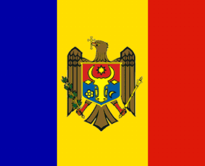

Geography of Moldova
Moldova is located in southeastern Europe, in the west the Prut River forms the border with Romania, and in the north, south and east it borders Ukraine. Most of the territory consists of the hilly plateau between the Prut and the Dniester. The Danube forms for 569 m the southern border of the country.
Coast: The Republic of Moldova has an access of 569 m to the Danube, which in this place is navigable for seagoing vessels. Theoretically, the Republic of Moldova could therefore have a maritime fleet, provided that the ships are small and not many.
Culture of Moldova
Culture of the Republic of Moldova - is the culture of the Moldovan state, later of Bessarabia and Moldova across the Prut, of the Autonomous Soviet Socialist Republic, of the Soviet Socialist Republic of Moldova and of the independent Republic of Moldova. The culture of Moldova is related to different nationalities, who lived and still live on the above-mentioned territory, to the language spoken on the territory of Moldova. The culture of Moldova is close to the culture of Romania, Ukraine and Russia, as well as the culture of other neighboring states.